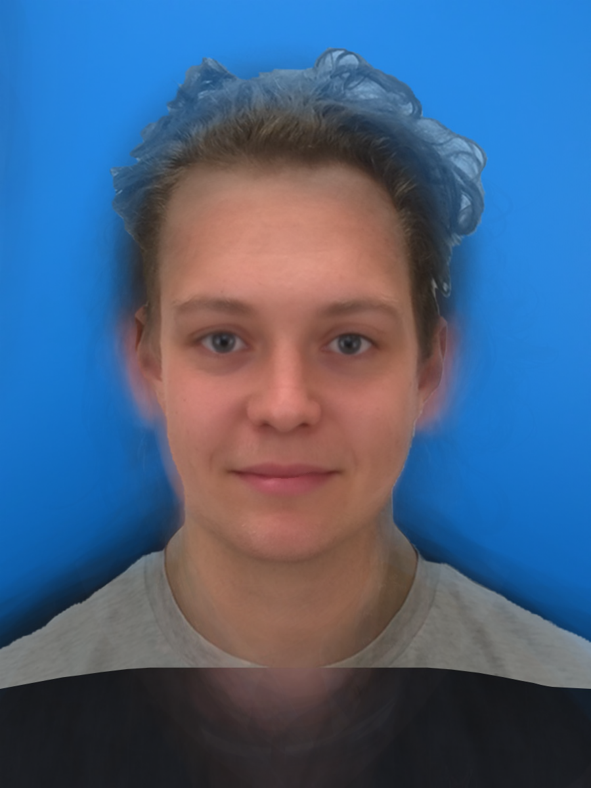

Création et assemblage d'images avec algorithme de morphage
Lors de ce travail, il sera question d'implémenter un algorithme de morphage de visage afin de pouvoir notamment créer des séquences vidéos de morphage entre deux visages ainsi que la création d'image d'humains "moyens".
Morphage de mon visage vers une moyenne de visage féminins
Le but du projet est de créer des images assemblées à partir de deux images différentes
Afin d'y parvenir, il sera nécessaire de générer des points de référence, calculer des triangulations et effectuer des transformations affines sur ces triangles.
Le code est disponible dans l'archive dans le dossier code(Algorithme de détection de visage,Morphage de visage, Moyenne des visages,Utilitaires)
Dans le cadre de la partie, il était demandé de générer des séquences vidéos de morphage entre deux images. Pour réaliser le tout, il est tout d'abord nécessaire de créer des points de référence dans les deux images à assembler. Une fois les points de contrôles en main, il est maintenant important de créer des triangulations sur la moyenne des points de contrôles des deux images.
Maintenant que les triangulations sont calculées, il est nécessaire d'effectuer une transformation affine sur chacun des triangles trouvés. Les paramètres Warp Frac et Dissolve Frac permettent ensuite de contrôler le niveau de fondue et le niveau de transformation de chaque image.
Grâce à ces différentes étapes, il est ensuite possible de générer une séquence vidéo du morphage en créant une série de morphage entre les deux visages en modifiant peu à peu les paramètres Warp Frac et Dissolve Frac afin d'obtenir des images ressemblant de plus en plus à l'image de destination.
Les séquences vidéos sont disponible dans le dossier video
Tout d'abord, dans cette partie, il est demandé de calculer le visage moyen à partir des images des étudiants de la classe, puis, à partir des images d'une banque d'images.
Afin de réaliser cette tâche, on utilise tout d'abord le detecteur de visage fourni afin de trouver les différents points de référence pour chaque image. Ensuite, on calcule une moyenne pour chacun de ces points de référence afin d'obtenir une matrice de points moyens de référence pour le visage. Après cela, il suffit d'utiliser ce qui a été réalisé dans la partie A afin de morpher complétement chaque visage vers les points de références moyens, en s'assurant d'avoir bien entendu le paramètre Warp Frac à 1 pour déformer complètement le visage vers le point de référencem moyen.
Finalement, il faut additionner toutes les images morphées puis divisée l'image résultante par le nombre d'images calculées. Ainsi, on obtient le visage moyen d'une banque d'image. Le même processus est répéter pour les visages moyens hommes et femmes en s'assurant de recalculer les images appropriées
Les images ont été morphées avec un dissolve frac égal à zéro car les résultats étaient plus esthétique.
{kind=link}
{kind=link}
{kind=link}
{kind=link}
{kind=link}
{kind=link}
{kind=link}
{kind=link}
{kind=link}
{kind=link}